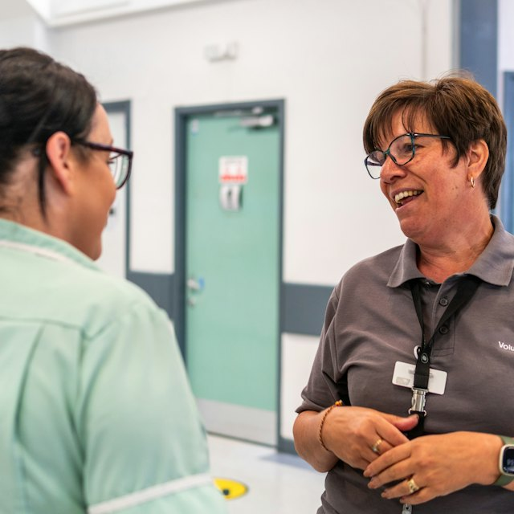

Nordlys Helse
Gjør en forskjell.
Sammen med oss.

Tre enklere komposisjoner med fullt bildeformat og faste tekstflater. Ingen stillingstittel eller sted i annonsedesignet.

Logo og budskap samlet på profilfargen over bildet. Én tydelig avsenderflate, og bildet får hele bredden under.
Et stort bilde først. Budskapet står på hvitt, med logoen som en rolig signatur nederst. Ingen kantstripe eller dekor.
Logo øverst og et bilde med litt luft rundt. Budskapet kommer under, på samme lyse bakgrunn. Et mykere alternativ til heldekkende fargefelt.
Disse konseptene skiller tekst fra foto og bruker faste tekst- og bakgrunnsfarger. Farger og logo er illustrasjoner, ikke en ny Frantz-profil.
Hvis annonsen eksporteres som bilde, er teksten fortsatt en del av bildet. Viktig informasjon må også finnes som vanlig annonsetekst, og med et relevant tekstalternativ der kanalen støtter det.
Før en mal velges: sjekk den i faktisk mobilstørrelse, med lange stillingstitler, ulike logoer og alle aktuelle kanalformater. Dette er konsepter, ikke dokumentasjon på WCAG-samsvar.
Fiktiv avsender og eksempeltekst. Bildene kommer fra den lokale prototypen. Nettsidens knapper er sammenligningsverktøy; de er ikke del av annonsebildet. Kilde: W3C: kontrast · W3C: bilder av tekst.